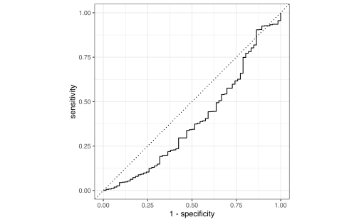
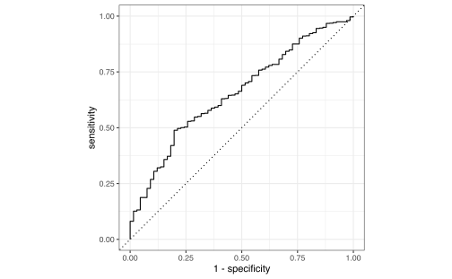
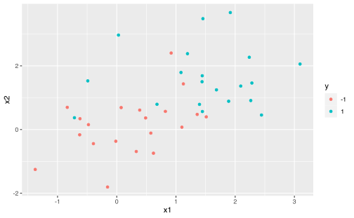
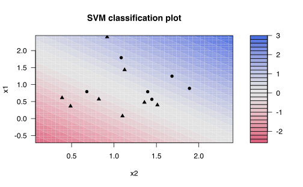
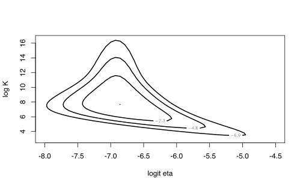
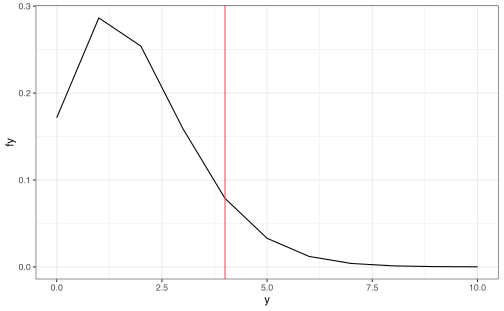

Capítulo 7 Métodos de selección de variables
Cuando se construye un modelo de regresión (lineal o logística) existe la posibilidad de que existan más variables que datos disponibles.
Si se recuerdan del Capítulo 4, el \(R^{2}\) ajustado tenía un factor \(n-p-1\) en el denominador y si \(n>p\) este tipo de indicador no se podría estimar.
En este capítulo veremos cómo construir modelos más pequeños y hacer comparaciones entre ellos.
7.1 Selección del mejor subconjunto.
En este caso trataremos de seleccionar el mejor subconjunto de un total de \(p\) variables. Claramente si escogieramos solo \(k\) varibles existiría \(\binom{p}{k}\) modelos diferentes que escoger.
El algoritmo para este caso sería:
Algoritmo: 1. Sea \(M_0\) el modelo nulo (solo tiene constantes). 1. Para \(k=1,2,\dots,p\) (número de variables), a. Ajuste todos los \(\binom{p}{k}\) modelos que contengan \(k\) predictores. b. Seleccione el mejor entre esos \(\binom{p}{k}\) modelos. El “mejor” es el que tenga el \(RSS\) menor, o el \(R^2\) más grande. Llame a este modelo \(M_k\). 1. Seleccione el mejor modelo entre \(M_0,M_1,\dots,M_p\) seleccione aquel que tenga mejor error de validación cruzada, \(C_p\), \(AIC\), \(BIC\) o \(R^2\) ajustado.
Nota: Más adelante veremos qué es validación cruzada, \(C_p\), \(AIC\) y \(BIC\)
Ejemplo: \(Y = \beta_0+\beta_1X_1+ \beta_2X_2 + \beta_3X_3\).
Puede ser que el mejor modelo sea
\(Y = \beta_0\),
\(Y = \beta_0+\beta_1X_1\),
\(Y = \beta_0+\beta_2X_2\),
\(Y = \beta_0+\beta_3X_3\),
\(Y = \beta_0+\beta_1X_1+\beta_2X_2\),
\(Y = \beta_0+\beta_1X_1+\beta_3X_3\), entre otras.
De los que tienen \(k=1\) variable, hay \(\binom{3}{1}\) = 3 modelos. Para \(k=2\), son \(\binom{3}{2}\) = 3, y para \(k=3\), solo un modelo. Para \(k=1\), se ajustan los 3 y al mejor se le llama \(M_1\). Así para los otros \(k\). Obtenidos estos modelos, se escoge el que tenga la mejor medida, con respecto a los errores antes mencionados.
Notas:
- La parte 2.b. se hace con la muestra de entrenamiento. Objetivo: Minimizar el error de entrenamiento.
- La parte 3 se selecciona con los datos de prueba. Objetivo: Minimizar el error de prueba.
- Si se usa el \(RSS\) o \(R^2\), siempre se selecciona el modelo con el número mayor de variables. Este es un problema de sobreajuste.
- El gran problema es la cantidad de variables y los modelos por ajustar, los cuales son \(\sum_{k=1}^n \binom{p}{k}\). Computacionalmente ineficiente.
7.1.1 Error de prueba
El problema con el error de prueba es que contiene una fuente de variabilidad no observada por el modelo.
2 soluciones
- Estimar indirectamente el error de prueba al añadirle un factor de sobreajuste. Es decir, agregarle artificialmente la variabilidad no observada, pero incluyendo más sesgo.
- Estimar directamente el error de prueba usando validación cruzada.
7.1.1.1 Validación cruzada
Dividir aleatoriamente los datos totales en 2 partes (con tamaños comparables)
- Conjunto de prueba: Se ajusta el modelo.
- Conjunto de validación: El modelo ajustado se usa para predecir en este conjunto.
Se usa una medida de validación en cada escogencia de los dos conjuntos (\(MSE\) en el caso cuantitativo)
- Puede que el varianza del estimador tenga una varianza muy alta.
- El error de validación tiende a ser mayor que el error de entrenamiento. Puede haber sobreestimación.
7.1.1.1.1 Validación cruzada “Leave-One-Out” (LOOCV)
Una sola observación \(\left( X_{i}, Y_{i} \right)\) se usa en el conjunto de validación. Observaciones restantes, se usan en el conjunto de entrenamiento.
Defina
\[\begin{equation*} MSE_{i} =(Y_{i}-\hat{Y}_{i})^{2} \end{equation*}\]
como el error cometido por usar la observación \(i\) como muestra de prueba y el resto de valores como muestra de entrenamiento.
El estimador LOOCV es
\[\begin{equation*} CV_{n} = \frac{1}{n} \sum_{i=1}^{n} MSE_{i} \end{equation*}\]
Ventajas
- Menos sesgo. (Conjunto de prueba de tamaño casi igual que los datos totales).
- Menos varianza.
Problema: Puede ser lento, dependiendo de la cantidad de datos.
7.1.1.1.2 Validación cruzada \(k-\)veces
Se aplica el mismo principio que LOOCV, pero se divide la muestra en \(k\) distintas partes.
\[\begin{equation*} CV_{k} = \frac{1}{k} \sum_{i=1}^{k} MSE_{k} \end{equation*}\]
Ventajas: Es más económico
Desventaja: Nivel intermedio de sesgo
\[\begin{equation*} \frac{n}{2} < \frac{(k-1)n}{k} < n-1 \end{equation*}\]
7.1.1.2 Validación cruzada para clasificación
Se usa
\[\begin{equation*} CV_{n} = \frac{1}{n} \sum_{i=1}^{n} Err_{i} \end{equation*}\]
donde \(Err_i = I_{Y_i \neq \hat{Y}_{i}}\)
y \(CV_{k}\) se define similar
7.1.2 Otras medidas de error de entrenamiento
\(R^2\) ajustado. Recuerde que \(R^2 = 1 - \dfrac{RSS}{TSS}\). Como \(RSS\) decrece si se le agrega más variables, entonces \(R^2 \nearrow 1\). Vea que \(RSS = \sum(y_i-\hat{y}_i)^2\) y \(TSS = \sum(y_i-\bar{y}_i)^2\), entonces, \[R^2 \text{ ajustado}= 1-\dfrac{\dfrac{RSS}{n-k-1}}{\dfrac{TSS}{n-1}}\]
\(C_p\). Se usa en ajustes con mínimos cuadrados.
\[ C_p = \dfrac{1}{n}\left[RSS+2p\hat\sigma^2\right]\]
donde \(k\) es el número de predictores y \(\hat\sigma^2\) es el estimador de la varianza de los errores \(\epsilon\). Si \(\hat\sigma^2\) es insegado de \(\sigma^2\), entonces \(C_p\) es un estimador insesgado del \(MSE\) de prueba.
- \(C_p\) de Mallows. Se denota \(C_p'\).
\[ C_p' = \dfrac{RSS}{\hat\sigma^2} + 2p-n \implies C_p = \dfrac1n\hat\sigma^2[C_p'+n] \propto C_p'\]
\(MLE\): \(2\ln L(\hat{\beta} | x)\).
\(AIC\) (Akaike Information Criterion).
\[ AIC = -2\log(L(\hat{\beta} \vert X)) + 2p \]
Esta medida es derivada asintóticamente de \(-2n\mathbb{E}[\log(L(\hat{\beta} \vert X))]\) cuando \(n\to \infty\).
- \(BIC\) (Bayesian Information Criterion).
\[ AIC = -2\log(L(\hat{\beta} \vert X)) + \log(n)p. \]
Representa asintóticamente hablando, el negativo del logaritmo de la distribución posterior.
Validación cruzada LOOCV es asintóticamente equivalente al AIC para modelos de regresión lineal múltiple (Stone 1977)
Una explicación detallada de cada medida la pueden encontrar en el Capítulo 7 (???) o en el artículo (Cavanaugh and Neath 2019).
7.1.3 Selección de modelos hacia adelante (Forward Stepwise Selection)
- Sea \(M_0\) el modelo nulo.
- Para \(k=0,1,\dots,p-1\),
- Considere los \(p-k\) modelos que contenga los predictores en \(M_k\) con un predictor adicional.
- Seleccione el mejor entre esos \(p-k\) modelos usando el \(R^2\) o \(RSS\). Llámelo \(M_{k+1}\).
- Seleccione el mejor modelo entre \(M_0,\dots, M_p\) usando \(VC\), \(Cp\), \(AIC\), \(BIC\) o \(R^2\) ajustado.
Ejemplo: \(Y=\beta_0+\beta_1X_1+\beta_2X_2+\beta_3X_3\)
\(M_0\): \(Y = \beta_0\)
\(M_1\): \(Y = \beta_0+\beta_1X_1\), \(Y = \beta_0+\beta_2X_2\) o \(Y = \beta_0+\beta_3X_3\). De los tres se escoge el mejor (por ejemplo, la segundo) y se le llama \(M_1\).
\(M_2\): a \(Y = \beta_0+\beta_2X_2\), que es \(M_1\), se le suma una variable extra (\(\beta_1X_1\) o \(\beta_3X_1\)) y se selecciona la mejor.
\(M_3\): \(M_2\) más la variable no incluida.
Nota: el número de modelos por calcular usando el mejor subconjunto es \(n^p\), mientras que usando Forward es \(1+\displaystyle\sum_0^ {p-1} p-k = \dfrac{1+p(1+p)}2\).
7.1.4 Selección de modelos hacia atrás (Backward Stepwise Selection)
- Sea \(M_p\) el modelo completo.
- Para \(k=p,p-1,\dots,1\),
- Considere los \(k\) modelos que contienen todos excepto uno de los predictores en \(M_k\) para un total de \(k-1\) predictores.
- Seleccione el mejor entre esos \(k\) modelos usando el \(R^2\) o \(RSS\). Llámelo \(M_{k+1}\).
- Seleccione el mejor modelo entre \(M_0,\dots,M_p\) usando \(VC\), \(C_p\), \(AIC\), \(BIC\) o \(R^2\) ajustado.
Ejemplo: \(Y=\beta_0+\beta_1X_1+\beta_2X_2+\beta_3X_3\)
\(M_3\): \(Y = \beta_0 +\beta_1X_1+\beta_2X_2+\beta_3X_3\).
\(M_2\): se quita una variable (\(X_1\), \(X_2\) o \(X_3\)) y se selecciona el mejor. Por ejemplo, se remueve \(X_1\).
\(M_1\): A \(M_{2}\) le quito otra variable. En este caso, \(X_2\) o \(X_3\) y se escoge el mejor.
\(M_0\): \(Y=\beta_0\), el modelo nulo.
7.2 Métodos de regularización
7.2.1 Regresión Ridge
Considere \[ RSS = \sum_{i=1}^{n}\left(y_i-\beta\sigma\sum_{j=1}^{p}\beta_jX_{ij}\right)^2 \] y \[ \hat\beta = \underset{\beta}{\mathrm{argmin}} RSS \]
La regresión Ridge consiste en determinar
\[ \hat\beta^R_\lambda = \underset{\beta}{\mathrm{argmin}}\left[RSS + \lambda\sum_{j=1}^n\beta_j^2\right]\]
Se define: \[\|\beta_{-0}\|^2_2 = \sum_{j=1}^{n}\beta_j^2\]
- Si \(\lambda = 0\), \(\hat\beta = \beta^R_\lambda\): caso de máxima varianza, con el menor sesgo posible.
- Si \(\lambda \to +\infty\), \(\beta \to 0\): se sacrifican todos los parámetros \(\beta\). Máximo sesgo pero varianza nula.
¿Cómo se debe seleccionar el \(\lambda\)? El método para seleccionarlo es por validación cruzada
7.2.1.1 Estimación clásica por mínimos cuadrados.
\[ \hat\beta = (X^T\cdot X)^{-1}X^Ty\] Si se multiplica una constante \(c\) a \(Xi\), entonces \(\hat\beta = \dfrac{\hat\beta_i}{c}\). La constante \(c\) afecta directamente al \(\|\beta_{-0}\|^2_2\), por lo que se recomienda estandarizar las covariables.
7.2.1.2 Ventajas
- Indica el balance entre sesgo y varianza.
- Si \(p>n\) (mayor cantidad de variables que datos), al realizar mínimos cuadrados, no se puede dar una solución, pero con la forma de regresión de Ridge es posible alcanzarla.
- Computacionalmente es más eficiente que usando selección de “todos los subconjuntos”.
7.2.2 Regresión Lasso
\[ \beta_{\lambda}^{LASSO} = \underset{\beta}{\mathrm{argmin}}\left(RSS + \lambda\sum_{j=1}^n |\beta_j|\right)\] Se define \[ \|\beta_{-0}\|_1 = \sum_{j=1}^n|\beta_j|\] Otra formulación para los métodos vistos son:
- : \(\underset{\beta}{\min} RSS\), sujeto a \(\displaystyle\sum_{j=1}^p\beta_j^2 \leq s\).
- : \(\underset{\beta}{\min} RSS\), sujeto a \(\displaystyle\sum_{j=1}^p|\beta_j| \leq s\).


7.3 Laboratorio
7.3.1 Cross-Validation
7.3.1.1 Leave-one-out Cross Validation (LOOCV)
Es posible comparar distintos ajustes de modelos usando cross-validation.
Carguemos la base de datos Auto de ISLR.
Y ajustamos un modelo entre las millas por galon contra los caballos de fuerza de ciertos vehículos.
##
## Call:
## glm(formula = mpg ~ horsepower, data = Auto)
##
## Deviance Residuals:
## Min 1Q Median 3Q Max
## -13.5710 -3.2592 -0.3435 2.7630 16.9240
##
## Coefficients:
## Estimate Std. Error t value Pr(>|t|)
## (Intercept) 39.935861 0.717499 55.66 <2e-16 ***
## horsepower -0.157845 0.006446 -24.49 <2e-16 ***
## ---
## Signif. codes: 0 '***' 0.001 '**' 0.01 '*' 0.05 '.' 0.1 ' ' 1
##
## (Dispersion parameter for gaussian family taken to be 24.06645)
##
## Null deviance: 23819.0 on 391 degrees of freedom
## Residual deviance: 9385.9 on 390 degrees of freedom
## AIC: 2363.3
##
## Number of Fisher Scoring iterations: 2La librería boot tiene funciones para aplicar cross-validation. Por ejemplo,
library(boot)
glm.fit <- glm(mpg ~ horsepower, data = Auto)
cv.err <- cv.glm(Auto, glm.fit)
cv.err$delta## [1] 24.23151 24.23114En particular se puede usar un for para aplicar este mismo procedimiento a múltiples modelos.
cv.error.LOOCV = rep(0, 5)
for (i in 1:5) {
glm.fit = glm(mpg ~ poly(horsepower, i), data = Auto)
cv.error.LOOCV[i] = cv.glm(Auto, glm.fit)$delta[1]
}
cv.error.LOOCV## [1] 24.23151 19.24821 19.33498 19.42443 19.033217.3.1.2 K-Fold Cross Validation
Este procedimiento se puede repetir con los el K-fold.
set.seed(17)
cv.error.10 = rep(0, 10)
for (i in 1:10) {
glm.fit = glm(mpg ~ poly(horsepower, i), data = Auto)
cv.error.10[i] = cv.glm(Auto, glm.fit, K = 10)$delta[1]
}
cv.error.10## [1] 24.27207 19.26909 19.34805 19.29496 19.03198 18.89781 19.12061 19.14666
## [9] 18.87013 20.955207.3.2 Selección de variables
Cargue los datos Hitters del paquete ISLR que representan el salario de varios jugadores de beisbol y sus estadística de juego (número de bateos, home runs, carreras, etc.).
7.3.2.1 Análisis exploratorio
Con esta información, haga un análisis exploratorio de los datos usando ggpairs.

## AtBat Hits HmRun Runs
## Min. : 16.0 Min. : 1 Min. : 0.00 Min. : 0.00
## 1st Qu.:255.2 1st Qu.: 64 1st Qu.: 4.00 1st Qu.: 30.25
## Median :379.5 Median : 96 Median : 8.00 Median : 48.00
## Mean :380.9 Mean :101 Mean :10.77 Mean : 50.91
## 3rd Qu.:512.0 3rd Qu.:137 3rd Qu.:16.00 3rd Qu.: 69.00
## Max. :687.0 Max. :238 Max. :40.00 Max. :130.00
##
## RBI Walks Years CAtBat
## Min. : 0.00 Min. : 0.00 Min. : 1.000 Min. : 19.0
## 1st Qu.: 28.00 1st Qu.: 22.00 1st Qu.: 4.000 1st Qu.: 816.8
## Median : 44.00 Median : 35.00 Median : 6.000 Median : 1928.0
## Mean : 48.03 Mean : 38.74 Mean : 7.444 Mean : 2648.7
## 3rd Qu.: 64.75 3rd Qu.: 53.00 3rd Qu.:11.000 3rd Qu.: 3924.2
## Max. :121.00 Max. :105.00 Max. :24.000 Max. :14053.0
##
## CHits CHmRun CRuns CRBI
## Min. : 4.0 Min. : 0.00 Min. : 1.0 Min. : 0.00
## 1st Qu.: 209.0 1st Qu.: 14.00 1st Qu.: 100.2 1st Qu.: 88.75
## Median : 508.0 Median : 37.50 Median : 247.0 Median : 220.50
## Mean : 717.6 Mean : 69.49 Mean : 358.8 Mean : 330.12
## 3rd Qu.:1059.2 3rd Qu.: 90.00 3rd Qu.: 526.2 3rd Qu.: 426.25
## Max. :4256.0 Max. :548.00 Max. :2165.0 Max. :1659.00
##
## CWalks League Division PutOuts Assists
## Min. : 0.00 A:175 E:157 Min. : 0.0 Min. : 0.0
## 1st Qu.: 67.25 N:147 W:165 1st Qu.: 109.2 1st Qu.: 7.0
## Median : 170.50 Median : 212.0 Median : 39.5
## Mean : 260.24 Mean : 288.9 Mean :106.9
## 3rd Qu.: 339.25 3rd Qu.: 325.0 3rd Qu.:166.0
## Max. :1566.00 Max. :1378.0 Max. :492.0
##
## Errors Salary NewLeague
## Min. : 0.00 Min. : 67.5 A:176
## 1st Qu.: 3.00 1st Qu.: 190.0 N:146
## Median : 6.00 Median : 425.0
## Mean : 8.04 Mean : 535.9
## 3rd Qu.:11.00 3rd Qu.: 750.0
## Max. :32.00 Max. :2460.0
## NA's :59Para limpiar la base de datos de NA usamos dplyr.
7.3.2.2 Selección del mejor subconjunto
Cargue la librería
y busque la ayuda de la función regsubsets. Use esta función para ajustar todo los posibles modelos de la forma Salary ~ ..
Puede guardar estos modelos en ciertas variables (e.g. regfit.full) y usar la función plot.
## Subset selection object
## Call: regsubsets.formula(Salary ~ ., Hitters)
## 19 Variables (and intercept)
## Forced in Forced out
## AtBat FALSE FALSE
## Hits FALSE FALSE
## HmRun FALSE FALSE
## Runs FALSE FALSE
## RBI FALSE FALSE
## Walks FALSE FALSE
## Years FALSE FALSE
## CAtBat FALSE FALSE
## CHits FALSE FALSE
## CHmRun FALSE FALSE
## CRuns FALSE FALSE
## CRBI FALSE FALSE
## CWalks FALSE FALSE
## LeagueN FALSE FALSE
## DivisionW FALSE FALSE
## PutOuts FALSE FALSE
## Assists FALSE FALSE
## Errors FALSE FALSE
## NewLeagueN FALSE FALSE
## 1 subsets of each size up to 8
## Selection Algorithm: exhaustive
## AtBat Hits HmRun Runs RBI Walks Years CAtBat CHits CHmRun CRuns CRBI
## 1 ( 1 ) " " " " " " " " " " " " " " " " " " " " " " "*"
## 2 ( 1 ) " " "*" " " " " " " " " " " " " " " " " " " "*"
## 3 ( 1 ) " " "*" " " " " " " " " " " " " " " " " " " "*"
## 4 ( 1 ) " " "*" " " " " " " " " " " " " " " " " " " "*"
## 5 ( 1 ) "*" "*" " " " " " " " " " " " " " " " " " " "*"
## 6 ( 1 ) "*" "*" " " " " " " "*" " " " " " " " " " " "*"
## 7 ( 1 ) " " "*" " " " " " " "*" " " "*" "*" "*" " " " "
## 8 ( 1 ) "*" "*" " " " " " " "*" " " " " " " "*" "*" " "
## CWalks LeagueN DivisionW PutOuts Assists Errors NewLeagueN
## 1 ( 1 ) " " " " " " " " " " " " " "
## 2 ( 1 ) " " " " " " " " " " " " " "
## 3 ( 1 ) " " " " " " "*" " " " " " "
## 4 ( 1 ) " " " " "*" "*" " " " " " "
## 5 ( 1 ) " " " " "*" "*" " " " " " "
## 6 ( 1 ) " " " " "*" "*" " " " " " "
## 7 ( 1 ) " " " " "*" "*" " " " " " "
## 8 ( 1 ) "*" " " "*" "*" " " " " " "Se puede incluir todas las variables con nvmax = 19.
regfit.full <- regsubsets(Salary ~ ., Hitters, nvmax = 19)
regfit.full.summary <- summary(regfit.full)
regfit.full.summary## Subset selection object
## Call: regsubsets.formula(Salary ~ ., Hitters, nvmax = 19)
## 19 Variables (and intercept)
## Forced in Forced out
## AtBat FALSE FALSE
## Hits FALSE FALSE
## HmRun FALSE FALSE
## Runs FALSE FALSE
## RBI FALSE FALSE
## Walks FALSE FALSE
## Years FALSE FALSE
## CAtBat FALSE FALSE
## CHits FALSE FALSE
## CHmRun FALSE FALSE
## CRuns FALSE FALSE
## CRBI FALSE FALSE
## CWalks FALSE FALSE
## LeagueN FALSE FALSE
## DivisionW FALSE FALSE
## PutOuts FALSE FALSE
## Assists FALSE FALSE
## Errors FALSE FALSE
## NewLeagueN FALSE FALSE
## 1 subsets of each size up to 19
## Selection Algorithm: exhaustive
## AtBat Hits HmRun Runs RBI Walks Years CAtBat CHits CHmRun CRuns CRBI
## 1 ( 1 ) " " " " " " " " " " " " " " " " " " " " " " "*"
## 2 ( 1 ) " " "*" " " " " " " " " " " " " " " " " " " "*"
## 3 ( 1 ) " " "*" " " " " " " " " " " " " " " " " " " "*"
## 4 ( 1 ) " " "*" " " " " " " " " " " " " " " " " " " "*"
## 5 ( 1 ) "*" "*" " " " " " " " " " " " " " " " " " " "*"
## 6 ( 1 ) "*" "*" " " " " " " "*" " " " " " " " " " " "*"
## 7 ( 1 ) " " "*" " " " " " " "*" " " "*" "*" "*" " " " "
## 8 ( 1 ) "*" "*" " " " " " " "*" " " " " " " "*" "*" " "
## 9 ( 1 ) "*" "*" " " " " " " "*" " " "*" " " " " "*" "*"
## 10 ( 1 ) "*" "*" " " " " " " "*" " " "*" " " " " "*" "*"
## 11 ( 1 ) "*" "*" " " " " " " "*" " " "*" " " " " "*" "*"
## 12 ( 1 ) "*" "*" " " "*" " " "*" " " "*" " " " " "*" "*"
## 13 ( 1 ) "*" "*" " " "*" " " "*" " " "*" " " " " "*" "*"
## 14 ( 1 ) "*" "*" "*" "*" " " "*" " " "*" " " " " "*" "*"
## 15 ( 1 ) "*" "*" "*" "*" " " "*" " " "*" "*" " " "*" "*"
## 16 ( 1 ) "*" "*" "*" "*" "*" "*" " " "*" "*" " " "*" "*"
## 17 ( 1 ) "*" "*" "*" "*" "*" "*" " " "*" "*" " " "*" "*"
## 18 ( 1 ) "*" "*" "*" "*" "*" "*" "*" "*" "*" " " "*" "*"
## 19 ( 1 ) "*" "*" "*" "*" "*" "*" "*" "*" "*" "*" "*" "*"
## CWalks LeagueN DivisionW PutOuts Assists Errors NewLeagueN
## 1 ( 1 ) " " " " " " " " " " " " " "
## 2 ( 1 ) " " " " " " " " " " " " " "
## 3 ( 1 ) " " " " " " "*" " " " " " "
## 4 ( 1 ) " " " " "*" "*" " " " " " "
## 5 ( 1 ) " " " " "*" "*" " " " " " "
## 6 ( 1 ) " " " " "*" "*" " " " " " "
## 7 ( 1 ) " " " " "*" "*" " " " " " "
## 8 ( 1 ) "*" " " "*" "*" " " " " " "
## 9 ( 1 ) "*" " " "*" "*" " " " " " "
## 10 ( 1 ) "*" " " "*" "*" "*" " " " "
## 11 ( 1 ) "*" "*" "*" "*" "*" " " " "
## 12 ( 1 ) "*" "*" "*" "*" "*" " " " "
## 13 ( 1 ) "*" "*" "*" "*" "*" "*" " "
## 14 ( 1 ) "*" "*" "*" "*" "*" "*" " "
## 15 ( 1 ) "*" "*" "*" "*" "*" "*" " "
## 16 ( 1 ) "*" "*" "*" "*" "*" "*" " "
## 17 ( 1 ) "*" "*" "*" "*" "*" "*" "*"
## 18 ( 1 ) "*" "*" "*" "*" "*" "*" "*"
## 19 ( 1 ) "*" "*" "*" "*" "*" "*" "*"## List of 8
## $ which : logi [1:19, 1:20] TRUE TRUE TRUE TRUE TRUE TRUE ...
## ..- attr(*, "dimnames")=List of 2
## .. ..$ : chr [1:19] "1" "2" "3" "4" ...
## .. ..$ : chr [1:20] "(Intercept)" "AtBat" "Hits" "HmRun" ...
## $ rsq : num [1:19] 0.321 0.425 0.451 0.475 0.491 ...
## $ rss : num [1:19] 36179679 30646560 29249297 27970852 27149899 ...
## $ adjr2 : num [1:19] 0.319 0.421 0.445 0.467 0.481 ...
## $ cp : num [1:19] 104.3 50.7 38.7 27.9 21.6 ...
## $ bic : num [1:19] -90.8 -128.9 -135.6 -141.8 -144.1 ...
## $ outmat: chr [1:19, 1:19] " " " " " " " " ...
## ..- attr(*, "dimnames")=List of 2
## .. ..$ : chr [1:19] "1 ( 1 )" "2 ( 1 )" "3 ( 1 )" "4 ( 1 )" ...
## .. ..$ : chr [1:19] "AtBat" "Hits" "HmRun" "Runs" ...
## $ obj :List of 28
## ..$ np : int 20
## ..$ nrbar : int 190
## ..$ d : num [1:20] 2.63e+02 1.10e+08 1.61e+05 1.85e+07 5.58e+03 ...
## ..$ rbar : num [1:190] 722.19 51.49 290.71 11.62 7.31 ...
## ..$ thetab : num [1:20] 535.926 0.382 5.509 0.306 -4.051 ...
## ..$ first : int 2
## ..$ last : int 20
## ..$ vorder : int [1:20] 1 10 6 17 4 8 19 16 5 15 ...
## ..$ tol : num [1:20] 8.11e-09 1.71e-05 7.91e-07 7.08e-06 1.94e-07 ...
## ..$ rss : num [1:20] 53319113 37253973 32381808 30651377 30559801 ...
## ..$ bound : num [1:20] 53319113 36179679 30646560 29249297 27970852 ...
## ..$ nvmax : int 20
## ..$ ress : num [1:20, 1] 53319113 36179679 30646560 29249297 27970852 ...
## ..$ ir : int 20
## ..$ nbest : int 1
## ..$ lopt : int [1:210, 1] 1 1 13 1 3 13 1 3 17 13 ...
## ..$ il : int 210
## ..$ ier : int 0
## ..$ xnames : chr [1:20] "(Intercept)" "AtBat" "Hits" "HmRun" ...
## ..$ method : chr "exhaustive"
## ..$ force.in : Named logi [1:20] TRUE FALSE FALSE FALSE FALSE FALSE ...
## .. ..- attr(*, "names")= chr [1:20] "" "AtBat" "Hits" "HmRun" ...
## ..$ force.out: Named logi [1:20] FALSE FALSE FALSE FALSE FALSE FALSE ...
## .. ..- attr(*, "names")= chr [1:20] "" "AtBat" "Hits" "HmRun" ...
## ..$ sserr : num 24200700
## ..$ intercept: logi TRUE
## ..$ lindep : logi [1:20] FALSE FALSE FALSE FALSE FALSE FALSE ...
## ..$ nullrss : num 53319113
## ..$ nn : int 263
## ..$ call : language regsubsets.formula(Salary ~ ., Hitters, nvmax = 19)
## ..- attr(*, "class")= chr "regsubsets"
## - attr(*, "class")= chr "summary.regsubsets"idx <- which.max(regfit.full.summary$rsq)
plot(regfit.full.summary$rsq)
points(idx, regfit.full.summary$rsq[idx], col = "red",
cex = 2, pch = 20)
idx <- which.min(regfit.full.summary$rss)
plot(regfit.full.summary$rss)
points(idx, regfit.full.summary$rss[idx], col = "red",
cex = 2, pch = 20)
idx <- which.max(regfit.full.summary$adjr2)
plot(regfit.full.summary$adjr2)
points(idx, regfit.full.summary$adjr2[idx], col = "red",
cex = 2, pch = 20)idx <- which.min(regfit.full.summary$cp)
plot(regfit.full.summary$cp)
points(idx, regfit.full.summary$cp[idx], col = "red",
cex = 2, pch = 20)idx <- which.min(regfit.full.summary$bic)
plot(regfit.full.summary$bic)
points(idx, regfit.full.summary$bic[idx], col = "red",
cex = 2, pch = 20)


## (Intercept) AtBat Hits Walks CAtBat CRuns
## 162.5354420 -2.1686501 6.9180175 5.7732246 -0.1300798 1.4082490
## CRBI CWalks DivisionW PutOuts Assists
## 0.7743122 -0.8308264 -112.3800575 0.2973726 0.28316807.3.2.3 Regresión forward y backward
La función regsubsets tiene un paramétro method. Usen los valores forward y backward y comparen los resultados.
Puede guardar estos modelos en ciertas variables (e.g. regfit.fwd y regfit.bwd) y usar la función plot.
regfit.fwd <- regsubsets(Salary ~ ., data = Hitters,
nvmax = 19, method = "forward")
summary(regfit.fwd)## Subset selection object
## Call: regsubsets.formula(Salary ~ ., data = Hitters, nvmax = 19, method = "forward")
## 19 Variables (and intercept)
## Forced in Forced out
## AtBat FALSE FALSE
## Hits FALSE FALSE
## HmRun FALSE FALSE
## Runs FALSE FALSE
## RBI FALSE FALSE
## Walks FALSE FALSE
## Years FALSE FALSE
## CAtBat FALSE FALSE
## CHits FALSE FALSE
## CHmRun FALSE FALSE
## CRuns FALSE FALSE
## CRBI FALSE FALSE
## CWalks FALSE FALSE
## LeagueN FALSE FALSE
## DivisionW FALSE FALSE
## PutOuts FALSE FALSE
## Assists FALSE FALSE
## Errors FALSE FALSE
## NewLeagueN FALSE FALSE
## 1 subsets of each size up to 19
## Selection Algorithm: forward
## AtBat Hits HmRun Runs RBI Walks Years CAtBat CHits CHmRun CRuns CRBI
## 1 ( 1 ) " " " " " " " " " " " " " " " " " " " " " " "*"
## 2 ( 1 ) " " "*" " " " " " " " " " " " " " " " " " " "*"
## 3 ( 1 ) " " "*" " " " " " " " " " " " " " " " " " " "*"
## 4 ( 1 ) " " "*" " " " " " " " " " " " " " " " " " " "*"
## 5 ( 1 ) "*" "*" " " " " " " " " " " " " " " " " " " "*"
## 6 ( 1 ) "*" "*" " " " " " " "*" " " " " " " " " " " "*"
## 7 ( 1 ) "*" "*" " " " " " " "*" " " " " " " " " " " "*"
## 8 ( 1 ) "*" "*" " " " " " " "*" " " " " " " " " "*" "*"
## 9 ( 1 ) "*" "*" " " " " " " "*" " " "*" " " " " "*" "*"
## 10 ( 1 ) "*" "*" " " " " " " "*" " " "*" " " " " "*" "*"
## 11 ( 1 ) "*" "*" " " " " " " "*" " " "*" " " " " "*" "*"
## 12 ( 1 ) "*" "*" " " "*" " " "*" " " "*" " " " " "*" "*"
## 13 ( 1 ) "*" "*" " " "*" " " "*" " " "*" " " " " "*" "*"
## 14 ( 1 ) "*" "*" "*" "*" " " "*" " " "*" " " " " "*" "*"
## 15 ( 1 ) "*" "*" "*" "*" " " "*" " " "*" "*" " " "*" "*"
## 16 ( 1 ) "*" "*" "*" "*" "*" "*" " " "*" "*" " " "*" "*"
## 17 ( 1 ) "*" "*" "*" "*" "*" "*" " " "*" "*" " " "*" "*"
## 18 ( 1 ) "*" "*" "*" "*" "*" "*" "*" "*" "*" " " "*" "*"
## 19 ( 1 ) "*" "*" "*" "*" "*" "*" "*" "*" "*" "*" "*" "*"
## CWalks LeagueN DivisionW PutOuts Assists Errors NewLeagueN
## 1 ( 1 ) " " " " " " " " " " " " " "
## 2 ( 1 ) " " " " " " " " " " " " " "
## 3 ( 1 ) " " " " " " "*" " " " " " "
## 4 ( 1 ) " " " " "*" "*" " " " " " "
## 5 ( 1 ) " " " " "*" "*" " " " " " "
## 6 ( 1 ) " " " " "*" "*" " " " " " "
## 7 ( 1 ) "*" " " "*" "*" " " " " " "
## 8 ( 1 ) "*" " " "*" "*" " " " " " "
## 9 ( 1 ) "*" " " "*" "*" " " " " " "
## 10 ( 1 ) "*" " " "*" "*" "*" " " " "
## 11 ( 1 ) "*" "*" "*" "*" "*" " " " "
## 12 ( 1 ) "*" "*" "*" "*" "*" " " " "
## 13 ( 1 ) "*" "*" "*" "*" "*" "*" " "
## 14 ( 1 ) "*" "*" "*" "*" "*" "*" " "
## 15 ( 1 ) "*" "*" "*" "*" "*" "*" " "
## 16 ( 1 ) "*" "*" "*" "*" "*" "*" " "
## 17 ( 1 ) "*" "*" "*" "*" "*" "*" "*"
## 18 ( 1 ) "*" "*" "*" "*" "*" "*" "*"
## 19 ( 1 ) "*" "*" "*" "*" "*" "*" "*"regfit.bwd <- regsubsets(Salary ~ ., data = Hitters,
nvmax = 19, method = "backward")
summary(regfit.bwd)## Subset selection object
## Call: regsubsets.formula(Salary ~ ., data = Hitters, nvmax = 19, method = "backward")
## 19 Variables (and intercept)
## Forced in Forced out
## AtBat FALSE FALSE
## Hits FALSE FALSE
## HmRun FALSE FALSE
## Runs FALSE FALSE
## RBI FALSE FALSE
## Walks FALSE FALSE
## Years FALSE FALSE
## CAtBat FALSE FALSE
## CHits FALSE FALSE
## CHmRun FALSE FALSE
## CRuns FALSE FALSE
## CRBI FALSE FALSE
## CWalks FALSE FALSE
## LeagueN FALSE FALSE
## DivisionW FALSE FALSE
## PutOuts FALSE FALSE
## Assists FALSE FALSE
## Errors FALSE FALSE
## NewLeagueN FALSE FALSE
## 1 subsets of each size up to 19
## Selection Algorithm: backward
## AtBat Hits HmRun Runs RBI Walks Years CAtBat CHits CHmRun CRuns CRBI
## 1 ( 1 ) " " " " " " " " " " " " " " " " " " " " "*" " "
## 2 ( 1 ) " " "*" " " " " " " " " " " " " " " " " "*" " "
## 3 ( 1 ) " " "*" " " " " " " " " " " " " " " " " "*" " "
## 4 ( 1 ) "*" "*" " " " " " " " " " " " " " " " " "*" " "
## 5 ( 1 ) "*" "*" " " " " " " "*" " " " " " " " " "*" " "
## 6 ( 1 ) "*" "*" " " " " " " "*" " " " " " " " " "*" " "
## 7 ( 1 ) "*" "*" " " " " " " "*" " " " " " " " " "*" " "
## 8 ( 1 ) "*" "*" " " " " " " "*" " " " " " " " " "*" "*"
## 9 ( 1 ) "*" "*" " " " " " " "*" " " "*" " " " " "*" "*"
## 10 ( 1 ) "*" "*" " " " " " " "*" " " "*" " " " " "*" "*"
## 11 ( 1 ) "*" "*" " " " " " " "*" " " "*" " " " " "*" "*"
## 12 ( 1 ) "*" "*" " " "*" " " "*" " " "*" " " " " "*" "*"
## 13 ( 1 ) "*" "*" " " "*" " " "*" " " "*" " " " " "*" "*"
## 14 ( 1 ) "*" "*" "*" "*" " " "*" " " "*" " " " " "*" "*"
## 15 ( 1 ) "*" "*" "*" "*" " " "*" " " "*" "*" " " "*" "*"
## 16 ( 1 ) "*" "*" "*" "*" "*" "*" " " "*" "*" " " "*" "*"
## 17 ( 1 ) "*" "*" "*" "*" "*" "*" " " "*" "*" " " "*" "*"
## 18 ( 1 ) "*" "*" "*" "*" "*" "*" "*" "*" "*" " " "*" "*"
## 19 ( 1 ) "*" "*" "*" "*" "*" "*" "*" "*" "*" "*" "*" "*"
## CWalks LeagueN DivisionW PutOuts Assists Errors NewLeagueN
## 1 ( 1 ) " " " " " " " " " " " " " "
## 2 ( 1 ) " " " " " " " " " " " " " "
## 3 ( 1 ) " " " " " " "*" " " " " " "
## 4 ( 1 ) " " " " " " "*" " " " " " "
## 5 ( 1 ) " " " " " " "*" " " " " " "
## 6 ( 1 ) " " " " "*" "*" " " " " " "
## 7 ( 1 ) "*" " " "*" "*" " " " " " "
## 8 ( 1 ) "*" " " "*" "*" " " " " " "
## 9 ( 1 ) "*" " " "*" "*" " " " " " "
## 10 ( 1 ) "*" " " "*" "*" "*" " " " "
## 11 ( 1 ) "*" "*" "*" "*" "*" " " " "
## 12 ( 1 ) "*" "*" "*" "*" "*" " " " "
## 13 ( 1 ) "*" "*" "*" "*" "*" "*" " "
## 14 ( 1 ) "*" "*" "*" "*" "*" "*" " "
## 15 ( 1 ) "*" "*" "*" "*" "*" "*" " "
## 16 ( 1 ) "*" "*" "*" "*" "*" "*" " "
## 17 ( 1 ) "*" "*" "*" "*" "*" "*" "*"
## 18 ( 1 ) "*" "*" "*" "*" "*" "*" "*"
## 19 ( 1 ) "*" "*" "*" "*" "*" "*" "*"


7.3.2.4 Regresión Ridge
Usando el paquete glmnet y la función con el mismo nombre, ejecute el siguiente comando
library(glmnet)
grid <- 10^seq(10, -2, length = 100)
ridge.mod <- glmnet(x, y, alpha = 0, lambda = grid)El factor lambda representa el \(\lambda\) de la fórmula
\[ \hat{\beta} = \underset{\beta}{\mathrm{argmin}} \left\{RSS + \lambda \Vert \beta \Vert_2^2\right\}.\]
Si no se incluye el paramétro lambda del modelo, R construye una secuencia de \(\lambda'\)s estimados por validación cruzada.
Haga lo siguiente:
Construya un modelo usando todos los datos (sin separar muestra de entrenamiento y prueba).
Construya el siguiente modelo
set.seed(1)
train <- sample(1:nrow(x), nrow(x)/2)
test <- -train
y.test <- y[test]
ridge.mod <- glmnet(x[train, ], y[train], alpha = 0,
lambda = grid)
ridge.pred <- predict(ridge.mod, s = 4, newx = x[test,
])
# MSE
mean((ridge.pred - y.test)^2)## [1] 142226.5¿Qué ocurre si se cambia el paramétro \(s\) de predict por un 10e10 (i.e. \(10^{10}\)). Comente los resultados. ¿Y qué ocurre si \(s=0\)?
- Finalmente, ejecute el siguiente código

Busque la ayuda de cv.glmnet y deduzca qué significa el gráfico.
library(glmnet)
grid <- 10^seq(10, -2, length = 100)
ridge.mod <- glmnet(x, y, alpha = 0, lambda = grid)## [1] 11497.57## (Intercept) AtBat Hits HmRun Runs
## 407.356050200 0.036957182 0.138180344 0.524629976 0.230701523
## RBI Walks Years CAtBat CHits
## 0.239841459 0.289618741 1.107702929 0.003131815 0.011653637
## CHmRun CRuns CRBI CWalks LeagueN
## 0.087545670 0.023379882 0.024138320 0.025015421 0.085028114
## DivisionW PutOuts Assists Errors NewLeagueN
## -6.215440973 0.016482577 0.002612988 -0.020502690 0.301433531## [1] 6.360612## [1] 705.4802## (Intercept) AtBat Hits HmRun Runs RBI
## 54.32519950 0.11211115 0.65622409 1.17980910 0.93769713 0.84718546
## Walks Years CAtBat CHits CHmRun CRuns
## 1.31987948 2.59640425 0.01083413 0.04674557 0.33777318 0.09355528
## CRBI CWalks LeagueN DivisionW PutOuts Assists
## 0.09780402 0.07189612 13.68370191 -54.65877750 0.11852289 0.01606037
## Errors NewLeagueN
## -0.70358655 8.61181213## [1] 57.11001
## [1] 255282.09651 232603.53866 211939.68139 193111.54424 175956.04690
## [6] 160324.59666 146081.80138 133104.29678 121279.67791 110505.52560
## [11] 100688.51928 91743.62874 83593.37763 76167.17236 69400.69070
## [16] 63235.32462 57617.67267 52499.07743 47835.20409 43585.65640
## [21] 39713.62682 36185.57767 32970.95069 30041.90230 27373.06250
## [26] 24941.31507 22725.59739 20706.71795 18867.19020 17191.08102
## [31] 15663.87277 14272.33748 13004.42236 11849.14532 10796.49991
## [36] 9837.36861 8963.44390 8167.15625 7441.60860 6780.51660
## [41] 6178.15419 5629.30400 5129.21215 4673.54708 4258.36204
## [46] 3880.06089 3535.36698 3221.29472 2935.12377 2674.37547
## [51] 2436.79132 2220.31350 2023.06697 1843.34327 1679.58574
## [56] 1530.37597 1394.42159 1270.54502 1157.67330 1054.82879
## [61] 961.12071 875.73740 797.93930 727.05257 662.46322
## [66] 603.61182 549.98861 501.12914 456.61020 416.04621
## [71] 379.08581 345.40887 314.72370 286.76452 261.28915
## [76] 238.07694 216.92684 197.65566 180.09647 164.09720
## [81] 149.51926 136.23638 124.13351 113.10583 103.05782
## [86] 93.90245 85.56042 77.95946 71.03376 64.72332
## [91] 58.97348 53.73443 48.96082 44.61127 40.64813
## [96] 37.03706 33.74679 30.74882 28.01718 25.52821
## 20 x 1 sparse Matrix of class "dgCMatrix"
## 1
## (Intercept) 4.821654e+01
## AtBat -3.538650e-01
## Hits 1.953167e+00
## HmRun -1.285127e+00
## Runs 1.156329e+00
## RBI 8.087771e-01
## Walks 2.709765e+00
## Years -6.202919e+00
## CAtBat 6.085854e-03
## CHits 1.070832e-01
## CHmRun 6.290984e-01
## CRuns 2.172926e-01
## CRBI 2.152888e-01
## CWalks -1.488961e-01
## LeagueN 4.586262e+01
## DivisionW -1.182304e+02
## PutOuts 2.501647e-01
## Assists 1.208491e-01
## Errors -3.277073e+00
## NewLeagueN -9.423459e+00set.seed(1)
train <- sample(1:nrow(x), nrow(x)/2)
test <- -train
y.test <- y[test]
ridge.mod <- glmnet(x[train, ], y[train], alpha = 0,
lambda = grid)
ridge.pred <- predict.glmnet(ridge.mod, s = 4, newx = x[test,
], exact = FALSE)## [1] 142226.5ridge.pred <- predict(ridge.mod, s = 1e+10, newx = x[test,
], exact = TRUE)
mean((ridge.pred - y.test)^2)## [1] 224669.8ridge.pred <- predict(ridge.mod, s = 0, newx = x[test,
], exact = FALSE)
mean((ridge.pred - y.test)^2)## [1] 166258.3##
## Call:
## lm(formula = y ~ x, subset = train)
##
## Coefficients:
## (Intercept) xAtBat xHits xHmRun xRuns xRBI
## 274.0145 -0.3521 -1.6377 5.8145 1.5424 1.1243
## xWalks xYears xCAtBat xCHits xCHmRun xCRuns
## 3.7287 -16.3773 -0.6412 3.1632 3.4008 -0.9739
## xCRBI xCWalks xLeagueN xDivisionW xPutOuts xAssists
## -0.6005 0.3379 119.1486 -144.0831 0.1976 0.6804
## xErrors xNewLeagueN
## -4.7128 -71.0951## 20 x 1 sparse Matrix of class "dgCMatrix"
## 1
## (Intercept) 275.7172204
## AtBat -0.4118004
## Hits -1.3490261
## HmRun 6.0905436
## Runs 1.4271781
## RBI 0.9898408
## Walks 3.8088184
## Years -17.2171582
## CAtBat -0.6086644
## CHits 3.0142526
## CHmRun 3.1935999
## CRuns -0.9320183
## CRBI -0.5105934
## CWalks 0.3200890
## LeagueN 116.5487876
## DivisionW -145.0182286
## PutOuts 0.1959973
## Assists 0.6722372
## Errors -4.6629290
## NewLeagueN -68.0666960
## [1] 326.0828## [1] 5.787151## [1] 139833.6out <- glmnet(x, y, alpha = 0)
predict(out, type = "coefficients", s = bestlam, exact = FALSE)[1:20,
]## (Intercept) AtBat Hits HmRun Runs RBI
## 15.44383135 0.07715547 0.85911581 0.60103107 1.06369007 0.87936105
## Walks Years CAtBat CHits CHmRun CRuns
## 1.62444616 1.35254780 0.01134999 0.05746654 0.40680157 0.11456224
## CRBI CWalks LeagueN DivisionW PutOuts Assists
## 0.12116504 0.05299202 22.09143189 -79.04032637 0.16619903 0.02941950
## Errors NewLeagueN
## -1.36092945 9.124877677.3.3 Regresión Lasso
Ejecute los procedimientos anteriores con glmnet pero modifique el paramétro alpha = 0. Compare los resultados.
En este caso, se están encontrando los valores de \(\beta\) tal que \[\hat{\beta} = \underset{\beta}{\mathrm{argmin}} \left\{RSS + \lambda \Vert \beta \Vert_1^2\right\}.\]


## [1] 9.286955## [1] 2.228611## [1] 143673.6out <- glmnet(x, y, alpha = 1, lambda = grid)
lasso.coef <- predict(out, type = "coefficients", s = bestlam)[1:20,
]
lasso.coef## (Intercept) AtBat Hits HmRun Runs
## 1.27479059 -0.05497143 2.18034583 0.00000000 0.00000000
## RBI Walks Years CAtBat CHits
## 0.00000000 2.29192406 -0.33806109 0.00000000 0.00000000
## CHmRun CRuns CRBI CWalks LeagueN
## 0.02825013 0.21628385 0.41712537 0.00000000 20.28615023
## DivisionW PutOuts Assists Errors NewLeagueN
## -116.16755870 0.23752385 0.00000000 -0.85629148 0.00000000## (Intercept) AtBat Hits Walks Years
## 1.27479059 -0.05497143 2.18034583 2.29192406 -0.33806109
## CHmRun CRuns CRBI LeagueN DivisionW
## 0.02825013 0.21628385 0.41712537 20.28615023 -116.16755870
## PutOuts Errors
## 0.23752385 -0.856291487.4 Ejercicios
- Del libro (James et al. 2013)
- Capítulo 5. 2, 5, 8.
- Capítulo 6: 5, 6, 7, 8, 10.
References
Cavanaugh, Joseph E., and Andrew A. Neath. 2019. “The Akaike Information Criterion: Background, Derivation, Properties, Application, Interpretation, and Refinements.” WIREs Computational Statistics 11 (3): e1460. https://doi.org/10.1002/wics.1460.
James, Gareth, Daniela Witten, Trevor Hastie, and Robert Tibshirani. 2013. An Introduction to Statistical Learning. Vol. 103. New York, NY: Springer New York. https://doi.org/10.1007/978-1-4614-7138-7.
Stone, M. 1977. “An Asymptotic Equivalence of Choice of Model by Cross-Validation and Akaike’s Criterion.” Journal of the Royal Statistical Society. Series B (Methodological) 39 (1): 44–47.